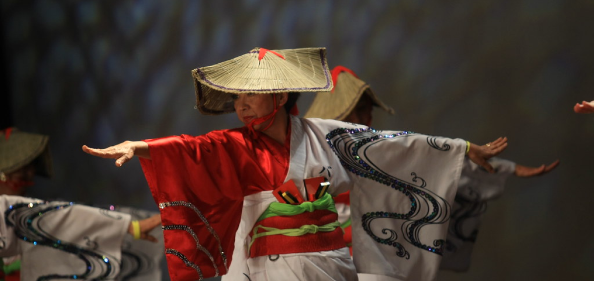
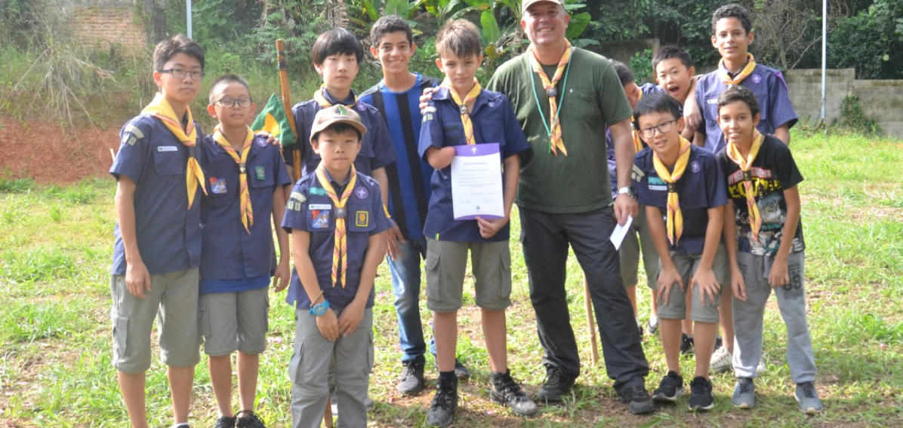
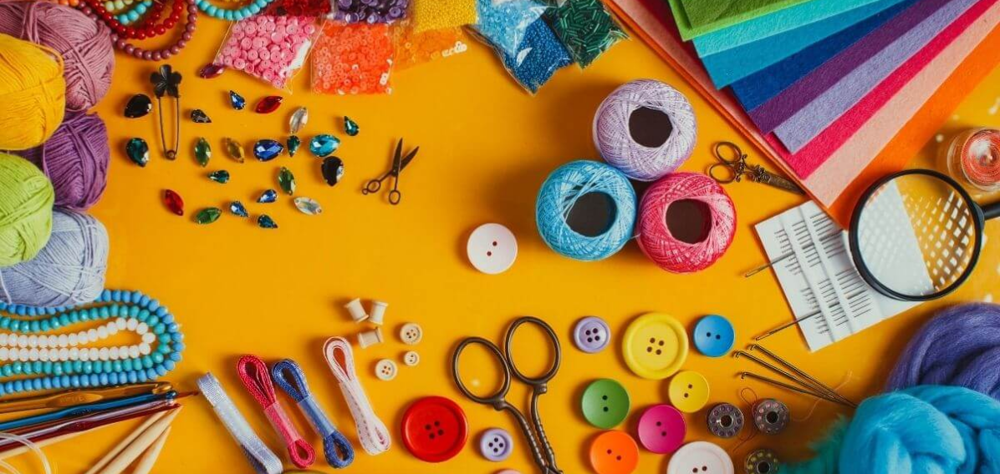

Na UCEG, nosso compromisso vai além do esporte, abrangendo uma rica variedade de atividades que visam enriquecer nossa comunidade e promover o bem-estar coletivo. Além das competições esportivas, organizamos e apoiamos uma gama diversificada de programas e iniciativas culturais e sociais.
Nossa abordagem é centrada em oferecer experiências que estimulam o crescimento pessoal e o engajamento comunitário. Cada atividade é planejada para proporcionar oportunidades de aprendizado, desenvolvimento e integração, criando um ambiente vibrante e inclusivo. Valorizamos a participação ativa e o envolvimento de todos, promovendo um espaço onde a cultura, a educação e a socialização se encontram.
Ao incentivar a diversidade de atividades, buscamos atender às diferentes necessidades e interesses da nossa comunidade, fortalecendo os laços entre os membros e contribuindo para um ambiente mais coeso e enriquecedor.
Atividades
Funjikai
Na UCEG, valorizamos a diversidade cultural e promovemos uma rica programação de atividades que celebram tradições e práticas de diferentes culturas. Entre nossas iniciativas, destacamos as influências da cultura japonesa, com eventos que enriquecem a nossa compreensão e apreciação das tradições orientais.
Um exemplo notável de nossa programação é o Funjikai, uma prática que combina filosofia e técnicas de treinamento mental e físico originárias do Japão. O Funjikai é mais do que uma simples atividade, é um caminho para o equilíbrio e o autodesenvolvimento pessoal. Por meio dessa prática, oferecemos aos nossos membros a oportunidade de explorar métodos tradicionais de fortalecimento mental e físico, promovendo uma abordagem holística para o bem-estar.
As sessões de Funjikai incluem práticas destinadas a aprimorar a concentração, a disciplina e a harmonia interior. Sob a orientação de especialistas, os participantes aprendem técnicas que ajudam a equilibrar o corpo e a mente, além de aprofundar o entendimento sobre a filosofia por trás dessas práticas. Os eventos de Funjikai não apenas proporcionam benefícios físicos e mentais, mas também ampliam o conhecimento sobre a rica herança cultural japonesa.
As sessões de Funjikai incluem práticas destinadas a aprimorar a concentração, a disciplina e a harmonia interior. Sob a orientação de especialistas, os participantes aprendem técnicas que ajudam a equilibrar o corpo e a mente, além de aprofundar o entendimento sobre a filosofia por trás dessas práticas. Os eventos de Funjikai não apenas proporcionam benefícios físicos e mentais, mas também ampliam o conhecimento sobre a rica herança cultural japonesa.
Escotismo
Na UCEG, acreditamos na importância do desenvolvimento integral dos jovens e, por isso, abraçamos o espírito do escotismo como parte de nossa missão. O escotismo, fundado por Robert Baden-Powell, é uma metodologia educacional que promove o crescimento pessoal, a liderança e a responsabilidade através de atividades práticas e experiências ao ar livre.
Através do escotismo, oferecemos aos jovens uma série de atividades que incentivam a autonomia e o trabalho em equipe, promovendo habilidades essenciais para a vida. As atividades escoteiras incluem desafios ao ar livre, projetos comunitários e aprendizados práticos, que são projetados para estimular a confiança, a capacidade de resolver problemas e o compromisso com a responsabilidade social.
Além de desenvolver habilidades práticas, o escotismo também valoriza a formação de caráter e a construção de valores fundamentais. Os jovens são encorajados a adotar princípios de honestidade, respeito e solidariedade, criando uma base sólida para seu crescimento pessoal e social. Os encontros e acampamentos escoteiros proporcionam experiências enriquecedoras que contribuem para o desenvolvimento de habilidades de liderança e o fortalecimento de laços comunitários.
Ao adotar o escotismo como uma parte integral de nossas atividades, a UCEG reafirma seu compromisso com a formação completa dos jovens, preparando-os para se tornarem cidadãos responsáveis e confiantes, enquanto desfrutam de experiências significativas e enriquecedoras.
Clube de Cultura Japonesa
Na UCEG, oferecemos o Clube de Cultura Japonesa, uma atividade regular dedicada à exploração e apreciação das ricas tradições e práticas culturais do Japão. Este clube proporciona uma excelente oportunidade para todos que desejam mergulhar mais fundo na cultura japonesa, permitindo uma imersão autêntica e enriquecedora.
No Clube de Cultura Japonesa, os participantes têm a chance de se envolver em uma variedade de atividades que celebram aspectos diversos da cultura nipônica. Desde workshops de culinária japonesa e cerimônias do chá até festivais culturais e aulas de língua japonesa, o clube oferece experiências que permitem aos membros explorar e vivenciar a tradição e a modernidade do Japão.
Além disso, o clube serve como um ponto de encontro para entusiastas da cultura japonesa, facilitando a troca de conhecimentos e a formação de novas amizades. É um espaço vibrante onde os participantes podem compartilhar suas próprias experiências e descobertas, aprendendo uns com os outros enquanto celebram a rica herança cultural do Japão. Com uma programação diversificada e um ambiente acolhedor, o Clube de Cultura Japonesa é uma parte fundamental da nossa missão de promover a diversidade cultural e o enriquecimento comunitário.
Programas de Voluntariado
Na UCEG, acreditamos que o voluntariado é uma maneira fundamental de fortalecer a comunidade e fazer a diferença. Nossos Programas de Voluntariado oferecem uma variedade de oportunidades para que os membros se envolvam em iniciativas significativas e contribuam para causas importantes.
Nossos programas abrangem uma gama diversificada de atividades, desde o apoio a instituições de caridade locais e iniciativas ambientais até projetos de educação e inclusão social. Cada oportunidade de voluntariado é projetada para atender às necessidades da comunidade e proporcionar uma experiência enriquecedora para os participantes.
Os membros têm a chance de se envolver em atividades como a organização de campanhas de arrecadação de fundos, o suporte a eventos comunitários e o trabalho direto com populações vulneráveis. Além disso, oferecemos programas específicos para grupos e famílias, promovendo a participação ativa de todos os segmentos da nossa comunidade.
Participar de nossos programas de voluntariado não só contribui para o bem-estar da comunidade, mas também oferece benefícios pessoais significativos. Os voluntários têm a oportunidade de desenvolver novas habilidades, expandir suas redes de contato e experimentar o impacto positivo de seu trabalho. Valorizamos a dedicação e o entusiasmo de nossos voluntários e proporcionamos suporte e reconhecimento contínuos para suas contribuições.
Acreditamos que o voluntariado é uma via de mão dupla que enriquece tanto os beneficiários quanto os voluntários. Ao se engajar em nossos programas, os membros têm a chance de se conectar com outros apaixonados pela causa e de fazer parte de uma rede de apoio que fortalece nossa comunidade como um todo.
Oficinas de Artesanato
Na UCEG, as Oficinas de Artesanato são uma parte essencial da nossa programação, oferecendo aos membros a chance de explorar e desenvolver habilidades criativas em um ambiente estimulante e acolhedor. Essas oficinas são projetadas para atender a todos os níveis de habilidade, desde iniciantes até artistas experientes, e cobrem uma ampla gama de técnicas e estilos.
Cada oficina é conduzida por instrutores qualificados e apaixonados, que compartilham seu conhecimento e experiência para guiar os participantes em projetos variados. Entre as atividades oferecidas estão a pintura, a escultura, o origami, a cerâmica e muitos outros tipos de artesanato. Os participantes têm a oportunidade de experimentar diferentes materiais e técnicas, permitindo-lhes descobrir novos talentos e expandir suas habilidades artísticas.
As oficinas de artesanato não são apenas uma oportunidade para criar obras de arte, mas também para se conectar com outros entusiastas e construir uma comunidade vibrante de criadores. Além das sessões práticas, as oficinas frequentemente incluem discussões sobre a história e a cultura relacionadas às técnicas aprendidas, proporcionando um aprendizado mais profundo e enriquecedor.
Ao participar das nossas Oficinas de Artesanato, os membros não só aprimoram suas habilidades e exploram novas formas de expressão artística, mas também se engajam em uma experiência social enriquecedora. Valorizamos a criatividade e a individualidade de cada participante e nos esforçamos para criar um ambiente onde todos possam se sentir inspirados e realizados.